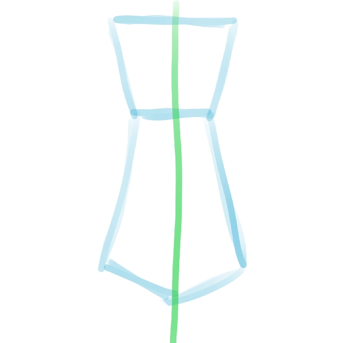
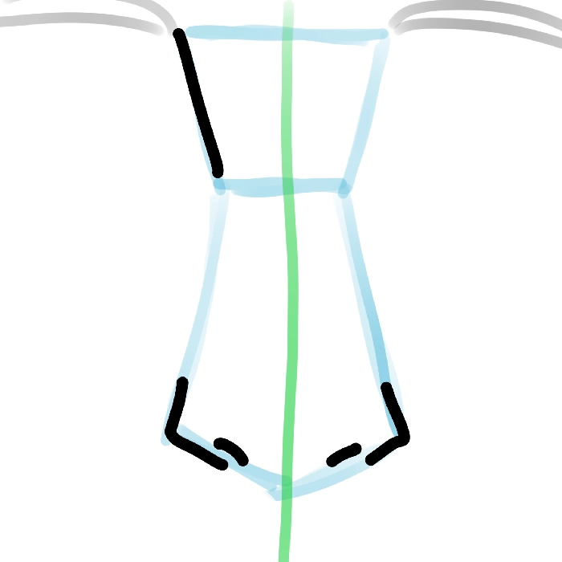
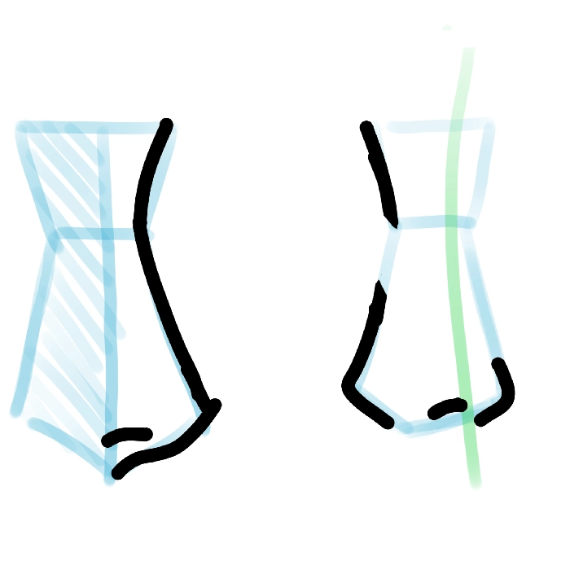

comment dessiner le nez
Le nez n'est pas forcément
la partie du corps la plus
utile pour exprimer les émotions
du visage ; c'est d'ailleurs pour
cela que certains mangakas ne le
dessinent que très petit. Il faut
quand même apprendre à le
maîtriser pour réussir ses
visages, et c'est ce que nous
allons voir grâce à ce cours.
C'est vrai que la technique que
je vais vous expliquer n'est pas
forcément la plus connue, mais
elle est redoutable : c'est la
technique de la cravate.
Et oui, si vous dessinez
une cravate avant de faire
le nez, cela va vous simplifier
la tâche. Regardez l'exemple
ci-dessous : si l'on place le
nez en suivant la forme de la
cravate comme sur le dessin d'à
côté, vous verrez que ça marche
parfaitement !
nez sans les traits finaux

nez avec les traits finaux


De plus, l'avantage est que cela fonctionne pour tous les angles de vue. Par exemple, sur un profil, on coupe simplement la cravate en deux à partir du milieu vertical. On peut observer que ça marche aussi pour le trois-quarts : il suffit de modifier légèrement la partie souhaitée (en la raccourcissant, en l'occurrence) et le résultat est là !Si vous avez des questions sur le cours, n'hésitez pas à nous en faire part sur le serveur Discord , dans le salon entraide-rapide.